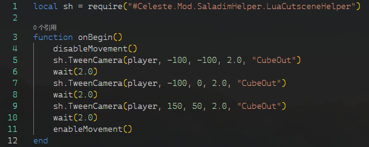

额外 - LuaCutscene
前言
欢迎来到这个额外章节, 虽然它被我扔到了 code mod 教程之中, 但是它实际上不需要太多的 C# 能力.
在这里会主要包含一些 LuaCutscene 本身以及使用其调用 C# 代码实现的有趣的效果,
如果你想要你的剧情拥有更多的炫酷效果, 而不是局限于只有对话框和 Madeline 无聊的走动,
比如炫酷的镜头缓动, 周边实体的花样表演, 甚至是拥有改变 gp 能力的剧情! 那么或许这里刚好就适合你.
那么现在就开始吧.
配置环境
这一步事实上是可选的, 不过为了更愉快的 lua 代码的书写,
我个人还是觉得挺有必要的.
在这里我会推荐使用 VSCode 配上 Lua (sumneko.lua)
插件.

Note
我个人不太会配置这种 lua 环境, 所以如果你遇到了大量的未定义警告你可以选择在设置中搜索 Lua.diagnostics.enable 并将其关闭.
Hello World
那么, 老传统. 现在, 在你的地图中放置一个 LuaCutscene 的 LuaCutscene/LuaCutsceneTrigger, 然后设置其 Filename 参数为一个 lua 文件的路径比如 Luas/testlua(注意没有后缀.lua),
然后 Save Changes. 然后我们根据刚才设置的路径正确放置我们的 lua 文件:
- <你的 mod 名字>
- Luas
- testlua.lua
- Luas
然后写上我们的 Hello World:
1 2 3 | |
保存后按下 F3 键重载你的地图, 然后走进你摆放的 trigger 内, 之后, 检查你的控制台, 或者检查你最新的 log.txt, 你应该会在茫茫日志海中看到这一行输出:
1 2 3 4 | |
高亮行便是我们的 lua 代码打印出来的.
Info
在之后的过程中虽然你可以反复翻看 log.txt 来知晓你的 lua 代码的运行情况, 不过这显然不如你有一个控制台窗口直接能看到输出.
对于在 windows 上, 你可以向蔚蓝根目录下的文件 everest-launch.txt 新加入一行 --console 来在蔚蓝每次启动时附带一个控制台窗口.
对话 Hello World
当然, 在控制台里看无聊的日志打印是没意思的, 所以现在我们向它加入几条对话.
首先为你这一段对话起一段名字, 比如 TESTDIALOG_HELLO, 通常我们建议前缀是你的地图名以防命名冲突, 后缀你可以根据你的爱好来取,
比如加上剧情所在面名, 或者干脆是剧情的自增序号. 然后新建一个 Simplified Chinese.txt, 也就是对话文件:
- <你的 mod 名字>
- Dialog
- Simplified Chinese.txt
- Dialog
以及它的内容:
1 2 3 | |
然后更改 lua 代码:
1 2 3 | |
现在重载资源, 进入 trigger, 你就能看到 Madeline 微笑着说 "我是 <你的存档名>." 了.
在这里对话状态时玩家依然能动, 可以通过将 lua 代码改成这样来在对话进行时禁止移动:
1 2 3 4 5 | |
对话 dialog 文件的相关内容这里就不细写了, 推荐参考蔚蓝制图教程的冬菜教程, 你可以到蔚蓝的制图群 (633125440) 中取得, 或者也可以在这个网盘链接中取得.
基础概念
相信在前面的阅读中你肯定是一头雾水的, 因为你对 lua 代码通常依然是一无所知的, 那就对了, 现在我们就来介绍几个简单的概念.
函数
在我们刚刚的 lua 代码中, 最外围的由 function 到 end 围起来的东西我们就叫一个函数:
1 2 3 4 5 | |
function 和 end 这种关系到代码结构的东西我们就叫它 '关键字', function 关键字后面到左括号之内的内容就是这个函数的函数名,
在这里即 onBegin, 在这里这个函数名是特殊的, 它会被 LuaCutscene 在玩家进入 trigger 时且剧情可以播放时 '调用'.
括号内的内容我们叫参数, 这里 LuaCutscene 要求我们 onBegin 这个特殊函数不能带参数或者带一个参数, 这里我们暂时置空, 也就是只有一对括号, 不带参数.
而这之中的内容便是函数的内容物, 也即主体, 它会从上到下顺序执行我们的代码.
通常主体是我们所聚焦的东西, 在这里, 我们的主体包含三行代码. 第一行代码是 disableMovement(), 也就是一个名称加上一对括号,
它表示调用一个名为 disableMovement 的函数, 并且不带参数, 这和刚才函数的声明有点相像,
disableMovement 是一个 LuaCutscene 为我们提前准备好的, 也即 '定义' 好的函数,
它的作用是禁止玩家的移动, 与之相对的就是 enableMovement 函数, 它会允许玩家移动.
中间的第二行代码调用了 say 这个函数, 它表示播放一个对话, 那么这里对话名就需要作为参数传递了,
所以我们在括号中写入刚才我们的对话名 TESTDIALOG_HELLO, 记住要带双引号, 因为它是一个 '字符串'.
Info
disableMovement 与 enableMovement 函数都是瞬间执行完毕的, 函数会马上继续执行下面的代码,
而 say 函数调用后直到玩家看完对话才会继续执行下面的代码. 对于后者我们特别地称为 协程函数.
变量, 返回值, if
现在, 我们观察下面代码:
1 2 3 4 5 6 7 8 | |
在函数开头我们使用了 local a = b() 这种语法, 开头的 local 关键字表示我们要声明一个变量, 紧跟的 hasFlag 表示这个变量的名称,
随后再次跟上一个 = 号, 这表示我们想以 = 号后边的值作为这个变量的值, 在这里它是 getFlag 这个预先定义的函数的返回值,
函数通常用于做一些事情, 而它的返回值就表示这件事做的如何, 在这里 getFlag 函数用于检测它的参数指代的那个 flag 是否存在,
当检测到 flag 存在时它会返回 true, 否之则返回 false. 这里这个返回值的 '类型' 是 bool, 它只有刚才提到的两个值, 所以同样地 hasFlag 这个变量的类型是 bool.
当我们从 getFlag 得到了对应 flag 是否存在的信息后, 我们使用 if 语句来检测它, 首先我们以 if 开头, 然后紧跟一个 bool 类型的值,
也就是这里的 hasFlag 变量, 然后再跟上一个 then 关键字, 随后再次跟上一小段代码, 随后以 end 结束, 这里的意思就是我们希望 then 到 end
所包围起来 '代码块' 仅在 hasFlag 为 true, 也即 getFlag 返回 true, 也即 flag MY_AWESOME_FLAG 存在时执行. 现在你可以试试复制上述的代码,
然后在你的地图中放置两个 flag Trigger, 一个开启 MY_AWESOME_FLAG 这个 flag, 一个关闭 flag, 然后分别尝试走进剧情 trigger,
你很容易会发现仅在 MY_AWESOME_FLAG flag 开启时剧情才会被播放, 也就是播放剧情的那三行代码才会被执行.
实际上既然 if 到 then 之间只需要一个类型为 bool 的值, 那么这里其实不需要 hasFlag 这个变量作为过渡:
1 2 3 4 5 6 7 | |
这行代码与上面是等效的.
通常有时候我们希望 flag 拥有情况不一的时候播放不同的剧情, 比如上面拥有 MY_AWESOME_FLAG flag 时播放剧情 A, 而没有时播放剧情 B. 首先我们先更新我们的对话文件:
1 2 3 4 5 6 7 | |
然后更新 lua 代码:
1 2 3 4 5 6 7 8 9 10 11 | |
现在在游戏中尝试一下, 符合我们的期望: 没有 flag 时播放 TESTDIALOG_HELLO_NOFLAG 这个对话, 拥有 flag 时播放 TESTDIALOG_HELLO 这个对话.
观察上述代码, 我们发现禁止和允许移动的那一对函数调用没必要重复两遍写在 if 里, 因为无论 if 的条件是否成立它们都是先禁止移动, 然后再允许移动, 所以我们将那一对代码抽离并放置在最上下:
1 2 3 4 5 6 7 8 9 | |
当然, 效果是一样的, 但是我们的代码简洁了不少.
更多函数
现在, 回忆一下我们已经了解到了哪些函数:
- 一个最上面使用过的函数
print, 作用为将它的参数内容输出出来 disableMovement, 没有参数, 作用为禁止玩家的移动enableMovement, 没有参数, 作用为允许玩家的移动say, 作用为播放参数所指的对话getFlag, 作用为检测参数所指的 flag 是否存在, 并且返回该值
当然, 函数的参数不可能只有一个, 比如 cassetteFly 函数:
1 2 3 4 5 6 | |
Info
-- 并加上空格起头的一行表示一行注释, 当代码执行到这时会直接忽略这一行, 此外还有块注释, 即忽略块所包围的一整块代码:
1 2 3 4 5 6 7 8 9 10 | |
cassetteFly 函数作用为乘坐泡泡飞行一段距离(收集磁带后的动作), 它需要接收两个参数, 它们均为 number 类型, 表示一个数字,
多个参数之间使用 , 逗号分隔开来, 注意这里参数类型是数字, 所以不需要加上双引号表示为字符串. 第一个参数表示横向的相对飞行距离, 单位 px,
正值向右, 负值向左, 第二个参数表示纵向的相对飞行距离, 正值向下, 负值向上.
不过不太好的是 cassetteFly 不是协程函数, 这会造成调用了该函数后马上调用 enableMovement 函数, 这会打断泡泡飞行的过程,
所以我们先暂时删掉 enableMovement 的调用, 不过不要担心, 泡泡飞行结束后会自动帮我们允许移动:
1 2 3 4 | |
然后到游戏中观察这个泡泡飞行进行所需的大概时间, 发现大概是 1.5 秒, 所以我们在泡泡飞行的调用后面紧跟一个 wait 的调用:
1 2 3 4 5 | |
顺便, 泡泡飞行结束后会自动允许移动, 所以我们还得再次禁掉移动:
1 2 3 4 5 6 | |
以及, 我们还希望在这个过程之后再播放一段对话:
1 2 3 4 5 6 7 | |
这是对应的 dialog:
1 2 3 | |
顺便不要忘了再允许移动:
1 2 3 4 5 6 7 8 | |
现在在游戏里试一下, 是不是先向左上角进行一个 (-100, -100) 的泡泡飞行,
然后过了 1.5 秒后准时播放 TESTDIALOG_FLY 这个对话, 然后仅在对话结束后才能移动?
除了使用 flag trigger 设置 flag 以外, 还可以在 lua 中设置 flag:
1 2 3 | |
setFlag 函数接收两个参数, 第一个参数为 string 类型, 指代一个 flag, 第二个参数为 bool 类型, 表示要设置为开启还是关闭.
那么显而易见, 效果就是经过这个 "剧情" trigger 时 FLAG_FROM_LUA 这个 flag 会被开启. 你可以找一些其他的 flag 驱动的实体来验证一下.
顺便我们还可以做一个有趣的效果, 经过 trigger 时反转开启状态:
1 2 3 | |
getFlag 返回了一个 bool 类型的值, 然后我们在这个值, 在这里是函数调用的返回值左侧写一个 not, 它表示翻转 bool 的值,
即 true -> false, false -> true, 那么在这里就是每次触发 trigger 时 FLAG_FROM_LUA 的开启状态被反转.
逻辑运算符
对于这些 lua 通用内容就直接丢个 w3c 的链接了:
Lua 运算符 w3cschool - https://www.w3cschool.cn/...
运用上面的知识你可以写一个 if 使得仅在两个 flag 同时成立时才执行内部的代码:
1 2 3 4 5 6 7 8 | |
其他特殊函数
除了上文提到的 onBegin 这个特殊函数外, 还有另外一个经常用到的 onEnd 函数,
顾名思义, 就是剧情结束时被调用的函数, 它通常会带两个参数:
1 2 3 | |
通常我们只会在 onEnd 调用中做清理工作, 比如说删掉剧情中出现的额外实体, 设置玩家的位置到最终位置等等,
注意的是, 跳过剧情这个动作实际上会直接打断 onBegin 的执行, 并且也会调用 onEnd, 这个打断位置是不可预知.
其中第一个参数是 Level 类型的值, 它是一个蔚蓝代码中的类型, 这里我们暂时忽略, 来关注第二个参数, 它是一个 bool 类型的值,
它表示这个剧情是自然结束的还是被跳过的, 比如在一些移动较多的剧情中~(多动症)~, 其 onEnd 就会通常是设置玩家的位置到最终位置,
顺带一提, 官图中有些剧情的位置设置只设置了横坐标, 所以比如 5a 进入内部那段路的在半空中跳过剧情来直接横向移动到按钮上的速通技巧才得以实现.
注意的是, onEnd 函数中不能使用协程函数, 如果你这么做了你会得到一个 attempt to yield from outside a coroutine 的报错,
这是因为 onBegin 函数本身也是一个协程函数, 这才允许你在内部使用协程函数.
其他函数
除了上述提到的 say, getFlag, setFlag 等外, 还有非常多预先定义好的函数, 你可以在下面这个链接中找到:
Lua Cutscenes Documentaion - https://maddie480.ovh/...
在上面这个文档中比如这个函数:
| Function | Description |
|---|---|
| helpers.die([direction={0, 0}[, evenIfInvincible=false[, registerDeathInStats=true]]]) | Kills the player. |
其中 helpers.die 说明这个函数名是 die, 后面圆括号围起来的表示它的参数, 一层层中括号围起来的表示可选参数,
参数名后面加等于号表示该可选参数的默认值, 比如上述函数的调用可以有:
| 调用方式 | 等效调用方式 |
|---|---|
| die() | die(vector2(0, 0), false, true) |
| die(vector2(1, 1)) | die(vector2(1, 1), false, true) |
| die(vector2(1, 1), true) | die(vector2(1, 1), true, true) |
| die(vector2(1, 1), true, false) | die(vector2(1, 1), true, false) |
顺便, 其中第一个参数的类型是个 Vector2, 表示一个二维向量, 这种类型的值你可以调用 vector2(1, 1) 函数来从返回值得到,
顾名思义它的第一个参数是 x 坐标, y 坐标. 这里它的含义是玩家死亡时的特效方向.
最后
相信到这里你已经体会到了 luacutscene, 或者说游戏中内嵌 lua 代码的强大. 在之后的文章中就不再会提及与 lua 相关的问题了, 所以在之后查找外部的 lua 教程是必要的, 比如 w3cschool 的 lua 教程.